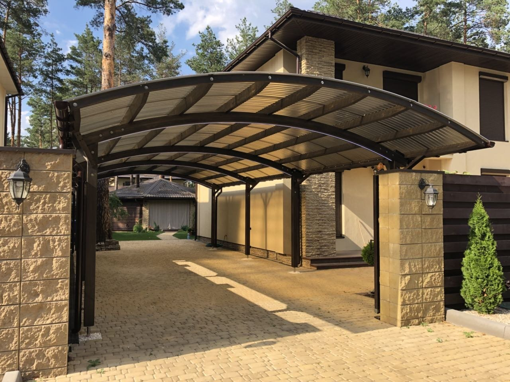

METALLOKON26 · Ставрополь · МихайловскНавес.
Навес.
Под ваш участок.
Производим и устанавливаем металлические навесы в Ставрополе и Михайловске. Подберём форму и кровлю под ваш участок.
Рассчитать мой навес
ПРИМЕРЫ РЕШЕНИЙФорма навеса.
Форма навеса.
Под вашу задачу.
Односкатный, двускатный или арочный вариант подбирается под место установки. Обсудим расположение, нужные размеры и кровлю, рассчитаем стоимость.
Обсудить мой навес